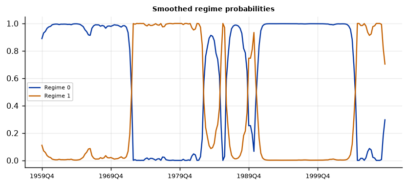
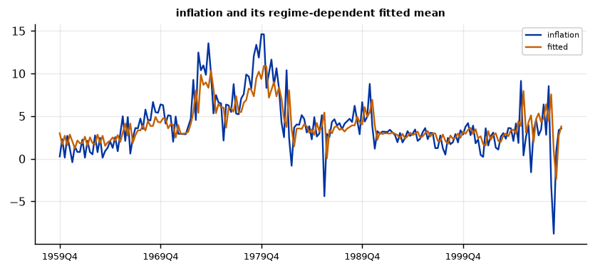

Run this model on your own data in Open Econometric Systems →
Step 1The question and the model
Does the Phillips curve differ between calm and turbulent regimes? In a Markov-switching regression (Goldfeld and Quandt 1973; Hamilton 1989) the coefficients and the error variance depend on an unobserved state \(s_t\):
Here \(y_t\) is inflation and \(x_t\) contains lagged inflation and lagged unemployment. You choose which parts switch: the intercept always does; the slopes and the variance can switch or be common. The model is estimated by maximum likelihood with the Hamilton filter.
Three checks before you trust a regime regression
- Is the dependent variable stationary? Regimes in a trending series are the trend in disguise.
- Does the data need regimes at all? Compare the one-regime regression with two and three regimes, and use the linearity test with the Garcia critical value or the Davies bound (the usual \(\chi^2\) test is not valid).
- Is each regime a real regime? A regime that contains two or three observations is not a regime but an outlier, and its variance goes to zero. Check the share and duration of every regime (Step 5).
How to write it: the model
We estimate a two-regime Markov-switching regression (Hamilton 1989) of quarterly inflation on its own lag and the lagged unemployment rate. The intercept, the slopes and the error variance are regime-specific, and the regime follows a first-order Markov chain. We estimate it by maximum likelihood, starting from the solution of the restricted model with common slopes and from several random starts, and keep the solution with the highest likelihood. We compare one, two and three regimes with AIC and BIC, and test linearity with the likelihood-ratio statistic, the critical values of Garcia (1998) and the bound of Davies (1987), because the standard asymptotic distribution does not hold when parameters are unidentified under the null.
Step 2Load the data and test for unit roots
import numpy as np
import pandas as pd
import oes_engine as oes # pip install -e open-econometric-systems/oes-engine
df = pd.read_csv("us_macro.csv")
df["inflation_lag"] = df["inflation"].shift(1)
df["inflation_lag2"] = df["inflation"].shift(2)
df["unemp_lag"] = df["unemp"].shift(1)
df = df.dropna() # one common sample for every model below
data = df.to_csv(index=False)
print(df[["inflation", "unemp"]].describe().round(2).loc[["count", "mean", "std", "min", "max"]])
spec = dict(y="inflation", x=["inflation_lag", "unemp_lag"], time="date", regimes=2, switching_exog="yes", switching_variance="yes")
r = oes.run("ms_reg", data, spec)
oes.show(r, "Unit-root") inflation unemp
count 200.00 200.00
mean 4.00 5.89
std 3.26 1.47
min -8.79 3.40
max 14.62 10.70
Unit-root tests
ADF level, constant: p ADF level, trend: p ADF first difference: p KPSS level: p Conclusion
Variable
dependent variable 0.025 0.0709 0.0 0.0772 I(0)
Note: ADF H0: unit root; KPSS H0: stationary (p-values are truncated at 0.01 and 0.10). For a Minnesota-type prior use a prior mean of 1 on the own first lag for I(1) variables in levels (random walk) and 0 for stationary variables. A VAR in levels with a random-walk prior remains valid when the variables are I(1) or cointegrated (Sims, Stock and Watson 1990).How to read it
Quarterly inflation rejects a unit root at 5% with a constant (p = 0.025), is borderline with a trend (p = 0.07), and the KPSS test does not reject stationarity at 5% (p = 0.077). We treat it as stationary, which is what a regime-in-the-mean model needs; the evidence is not overwhelming, so say so. If the series were clearly I(1) (as the federal funds rate is, with p = 0.29), you would model its change instead.
Step 3How many regimes? Is the relationship linear?
oes.show(r, "Number of regimes")
oes.show(r, "Linearity")Number of regimes: information criteria
Log-likelihood AIC BIC HQIC
Regimes
1 -466.070 940.140 953.333 945.479
2 -426.044 872.087 905.070 885.435
3 -404.794 845.589 904.958 869.615
Note: Regimes = 1 is the linear model. Under the null of no switching some parameters are unidentified, so a standard LR test is not valid (Hansen 1992; Garcia 1998): compare models with the criteria and with the economic meaning of the regimes.
Linearity: likelihood-ratio statistic
Value
Statistic
LR = 2 (logL switching - logL linear) 80.052
Garcia (1998) 5% critical value, two-regime models (approximate) about 14
Davies upper-bound p-value 0.0
Note: A large LR (well above the Garcia critical value) rejects the linear model.How to read it
The log-likelihood rises from \(-466.1\) with one regime to \(-426.0\) with two, and the linearity statistic is 80.1, far above the Garcia 5% critical value of about 14 (Davies p < 0.001): the data reject a single regime. Two regimes against three is a closer call: the BIC is 905.1 for two and 905.0 for three, AIC prefers three (845.6 against 872.1). We stay with two regimes for two reasons: the BIC does not prefer three, and the three-regime solution collapses (Step 7). The three-regime row in this table comes from one default start, so treat it as indicative.
Step 4Estimate
oes.show(r, "Parameter estimates")
oes.show(r, "Transition")
oes.show(r, "Regimes")
oes.show(r, "Regime classification")
print(r["notes"])Parameter estimates
Estimate Std. err. z p-value
Parameter
p[0->0] 0.9665 0.0184 52.6602 0.0000
p[1->0] 0.0600 0.0342 1.7579 0.0788
const[0] 1.6611 0.6397 2.5969 0.0094
const[1] 3.5224 2.1242 1.6582 0.0973
x1[0] 0.5018 0.0860 5.8316 0.0000
x1[1] 0.5608 0.1003 5.5911 0.0000
x2[0] -0.0375 0.1046 -0.3586 0.7199
x2[1] -0.1389 0.2974 -0.4670 0.6405
sigma2[0] 1.6250 0.2327 6.9839 0.0000
sigma2[1] 13.5182 2.4612 5.4924 0.0000
Note: p[i->j] is the probability of moving from regime i to regime j; [r] marks a regime-specific parameter.
Transition probabilities (row: from, column: to)
Regime 0 Regime 1
From
Regime 0 0.9665 0.0335
Regime 1 0.0600 0.9400
Regimes
Expected duration (periods) Share of periods (smoothed prob. > 0.5) Mean of inflation in the regime
Regime
Regime 0 29.807 0.665 2.9110
Regime 1 16.653 0.335 6.1483
Regime classification
Value
Measure
Regime classification measure, RCM (Ang and Bekaert 2002) 15.41
Note: RCM = 0: every period is assigned to a regime with certainty; RCM = 100: no information. Below about 30 is a sharp classification.
['Markov-switching regression (Hamilton 1989) with a switching constant, switching slopes and switching variance; maximum likelihood (EM, then quasi-Newton), standard errors from the Hessian.']How to read it
Regime 0 is the calm regime: it holds 66.5% of the quarters, lasts 29.8 quarters on average (\(p_{00} = 0.967\)), and inflation averages 2.9%. Regime 1 is the turbulent regime: 33.5% of the quarters, 16.7 quarters on average (\(p_{11} = 0.94\)), inflation averages 6.1%. The sharpest difference is the error variance: 1.6 against 13.5, more than eight times larger. The intercepts differ (1.66, p = 0.009, and 3.52, p = 0.10), but the second is imprecise. The coefficient on lagged inflation is almost the same in both regimes (0.50 and 0.56, both highly significant), and the coefficient on lagged unemployment is small and insignificant in both (\(-0.04\) and \(-0.14\)). So the regimes differ in the level and the volatility of inflation, not in how it responds to unemployment. The probability of leaving the turbulent regime (0.06) is only marginally significant (p = 0.08). The RCM of 15.4 shows a sharp classification. No collapse warning was raised.
Step 5Regime dates
oes.show(r, "Regime dating")
oes.plot(r, "Smoothed regime probabilities", ncols=1, size=(6.5, 3))
oes.plot(r, "inflation and its regime-dependent fitted mean", ncols=1, size=(6.5, 3))Regime dating (most likely regime, consecutive periods)
From To Periods Average probability
Regime
Regime 0 1959Q4 1972Q4 53 0.965
Regime 1 1973Q1 1983Q1 41 0.988
Regime 0 1983Q2 1985Q3 10 0.789
Regime 1 1985Q4 1986Q2 3 0.909
Regime 0 1986Q3 1989Q3 13 0.869
Regime 1 1989Q4 1990Q4 5 0.766
Regime 0 1991Q1 2005Q1 57 0.978
Regime 1 2005Q2 2009Q3 18 0.930

How to read it
The turbulent regime covers 1973Q1–1983Q1 (41 quarters, average probability 0.99, the oil shocks and the disinflation of 1979–82), short episodes in 1985–86 and 1989–90, and 2005Q2–2009Q3 (18 quarters, the energy price swings and the 2008–09 crisis). The calm regime covers 1959Q4–1972Q4 and 1991Q1–2005Q1. The short episodes (3 and 5 quarters) have lower probabilities (0.77–0.91); do not interpret them as separate events. Show the probability figure, not only the dates.
Step 6Diagnostics
oes.show(r, "Residual diagnostics")Residual diagnostics (observed minus regime-weighted fit)
Statistic p-value Detail
Test
Portmanteau (Hosking), 12 lags 35.8763 0.0003 df = 12; H0: no residual autocorrelation (approximate after estimating lags)
Ljung-Box, residual 36.2350 0.0003 H0: no autocorrelation
Jarque-Bera, residual 193.9496 0.0000 H0: normal residuals
ARCH LM, residual 26.8059 0.0000 H0: no conditional heteroskedasticityHow to read it
The residuals fail all three tests: autocorrelation (Ljung-Box p = 0.0003), non-normality (Jarque-Bera p < 0.001) and ARCH (p < 0.001). Quarterly inflation is noisy, has outliers (the minimum is \(-8.8\)) and has dynamics beyond one lag, which the regime-dependent variance only partly absorbs. The standard errors are therefore approximate; report that, and note that the regime conclusion (a turbulent and a calm state) does not depend on them. If dynamics are the point, use the Markov-switching autoregression with more lags or the Markov-switching VAR.
Step 7Robustness, and what a collapsed regime looks like
def run_variant(**kw):
res = oes.run("ms_reg", data, dict(spec, **kw))
s = {x["label"]: x["value"] for x in res["summary"]}
reg = oes.frame(next(t for t in res["tables"] if t["title"] == "Regimes"))
warn = [n for n in res["notes"] if "collapsed" in n or "almost zero" in n]
return [s["Log-likelihood"], s["BIC"], " / ".join(f"{v:.0%}" for v in reg.iloc[:, 1]), "yes" if warn else "no"]
variants = {"baseline": {}, "common slopes": dict(switching_exog="no"), "common variance": dict(switching_variance="no"),
"without unemployment": dict(x=["inflation_lag"]), "two lags": dict(x=["inflation_lag", "inflation_lag2", "unemp_lag"]),
"three regimes": dict(regimes=3)}
tab = {k: run_variant(**v) for k, v in variants.items()}
print(pd.DataFrame(tab, index=["log-lik", "BIC", "share of periods", "collapse warning"]).T)log-lik BIC share of periods collapse warning baseline -426.044 905.07 66% / 34% no common slopes -426.202 894.791 66% / 34% no common variance -449.27 946.226 54% / 46% no without unemployment -426.219 894.825 66% / 34% no two lags -304.5 672.58 2% / 98% yes three regimes -350.77 796.911 2% / 58% / 40% yes
How to read it
Slopes: letting the slopes switch gives almost the same likelihood as common slopes (\(-426.0\) against \(-426.2\)), and the BIC is 10 points lower with common slopes (894.8 against 905.1), so the slopes do not need to switch. Unemployment: dropping it leaves the likelihood and BIC unchanged (\(-426.2\), 894.8): the Phillips-curve term adds nothing. Variance: forcing a common variance lowers the log-likelihood by 23 (to \(-449.3\)) and raises the BIC to 946.2, and the regimes become 54% and 46%: switching variance is the essential feature. Collapse: with two lags, and with three regimes, the estimation converges to a regime that holds only 2% of the quarters, and the warning flags both. In the three-regime case one regime holds three quarters and has a variance of zero, and the log-likelihood rises to \(-350.8\), higher than the non-degenerate solutions, which is exactly why a higher likelihood alone is not a criterion. Report the number of observations in each regime for every specification.
Step 8Write the results
How to write it: results
We estimate a two-regime Markov-switching regression of quarterly U.S. inflation on lagged inflation and lagged unemployment, 1959Q4–2009Q3. The data reject a single regime (likelihood-ratio statistic 80.1, against a Garcia 5% critical value of about 14). The calm regime (66.5% of quarters, expected duration 29.8 quarters) has average inflation of 2.9% and error variance 1.6; the turbulent regime (33.5% of quarters, 16.7 quarters) has average inflation of 6.1% and error variance 13.5. The turbulent regime is dated 1973Q1–1983Q1 and 2005Q2–2009Q3, with short episodes in 1985–86 and 1989–90. The slope on lagged inflation is 0.50 in the calm and 0.56 in the turbulent regime; the coefficient on unemployment is not significant in either (\(-0.04\) and \(-0.14\)). A specification with common slopes has a lower BIC (894.8 against 905.1), and dropping unemployment changes nothing, so the regimes differ in level and volatility, not in the response of inflation to unemployment. Allowing the variance to switch is essential (the log-likelihood falls by 23 without it). The residuals show autocorrelation and ARCH, so standard errors are approximate. Specifications with three regimes or two lags converge to a regime of fewer than five quarters, and we do not report them.
| Report | What | Where |
|---|---|---|
| Model | Dependent variable, regressors, what switches, estimation and starting values | Step 1 |
| Data | Unit-root tests | Step 2 |
| Regimes | AIC, BIC for one to three regimes; linearity statistic and its critical value | Step 3 |
| Estimates | Regime-specific intercepts, slopes, variances; transition probabilities; durations | Step 4 |
| Dates | Regime dates and probabilities, figures | Step 5 |
| Diagnostics | Residual tests | Step 6 |
| Robustness | Common slopes or variance, lags, regressors, number of regimes, collapse warnings | Step 7 |
References. Goldfeld and Quandt (1973), Journal of Econometrics; Hamilton (1989), Econometrica; Kim and Nelson (1999), State-Space Models with Regime Switching, MIT Press; Garcia (1998), International Economic Review; Davies (1987), Biometrika; Hansen (1992), Journal of Applied Econometrics; Ang and Bekaert (2002), Review of Financial Studies.